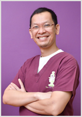
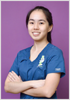
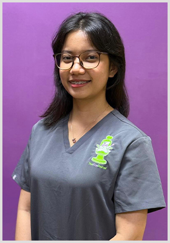
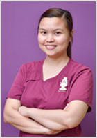
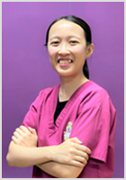
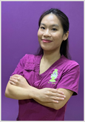
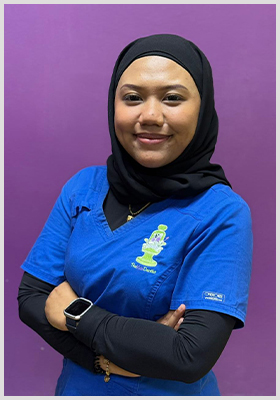

Dedicated Paediatric Dental Specialists
Meet the renowned dentists and caring support staff of The Kids Dentist, providing specialist dental care in Singapore since 2006.
Our Specialists

Dr Rashid Tahir is a trained paediatric dentist and has been providing oral health care solely for children since 1997.
Dr Rashid completed his graduate training at the University of London in 1998 when he was conferred a Master of Science with Distinction in Children’s Dentistry (Paedodontics). He also won the 3M Dental Postgraduate Prize for being the best student in his cohort.
He was an Assistant Professor at the Faculty of Dentistry, National University of Singapore (NUS) and consultant at the National University Hospital Dental Centre from 2002 to 2006, before setting up The Kids Dentist at Camden Medical Centre. He still enjoys teaching paediatric dentistry to dental students and goes back to NUS as an Adjunct Associate Professor.
He is the founding President of the Society for Paediatric Dentistry (Singapore) and continues to be dedicated to the advancement in the field of paediatric dentistry. He was President of the Pediatric Dentistry Association of Asia (2016 – 2018), Chairman of the Specialist Accreditation Committee for Paediatric Dentistry (2008 – 2015) and Member of Dental Specialists Accreditation Board (2017 – 2022).
He is the proud father of 2 beautiful young daughters and aims at making dentistry fun for kids!

Dr. Sylvia Koh graduated with a Bachelor of Dental Science (Honours) from the University of Queensland. She was actively involved in volunteer work during her undergraduate studies.
Having graduated with a Master of Dental Surgery from the National University of Singapore, she is currently focused on practising paediatric dentistry at The Kids Dentist. She regularly attends training courses to keep up to date with the latest dental developments.
Outside of dentistry, she loves collecting air plants.
Our Support Team
"Each of our staff offers their own special touch to the practice, ensuring your child feels warm, safe, and happy."

Behind Seryna's youthful glow is someone dependable, sharp, and highly creative. As our Appointment Specialist, she is the gatekeeper of time, running the scheduling calendar efficiently and assisting parents with bookings.

Dianne is an extremely fun-loving person who is friendly, kind, and sympathetic to children. She enjoys singing and has lived in Singapore for 8 years. She is a proud mother to a beautiful girl.

Min Yu's gentle and kind disposition brings comfort to anxious children. She is an animal lover who enjoys spending time with her pet cats, going to the movies, and watching Korean dramas.

Our youngest pediatric Dental Assistant joined us in September 2023. She eats and laughs a lot, enjoys music, and loves seeing patients smile with healthy and clean teeth.

Shasha enjoys exploring different cuisines and discovering new flavors, believing that good food and good smiles bring people together. Shasha appreciates how a healthy smile connects people.
Our Philosophy
The Kids Dentist is dedicated to providing specialised dentistry for infants, children, and adolescents in Singapore. In line with the American Academy of Pediatric Dentistry, we recommend that children visit the dentist by their 1st birthday to prevent early oral health care problems.
Parents play an essential role in making their child's first visit enjoyable. We advise informing your child about the visit in advance, telling them that the dentist will count and clean their teeth. We recommend avoiding words like "needle," "pain," "drill," or "hurt," as they can cause unnecessary fear. Instead, we use pleasant, non-threatening words that convey the same message.
While visiting our clinic, your child is welcome to enjoy toys, books, and TV games, as well as watch DVD movies while sitting in the dental chair.
Includes a complete examination performed by our paediatric dentists. Radiographs (x-rays) may be obtained if necessary. Parents are highly encouraged to accompany their child into the examination room.
Equipped with video games, books, toys, and custom TV screens on the dental chair to distract and entertain your child during treatment.
We provide specialized dental care for children with complex medical conditions, physical or developmental needs, and behavioral challenges.
Have Questions?
Whether you want to schedule a visit or ask about our services, we are here to help. Contact us today.